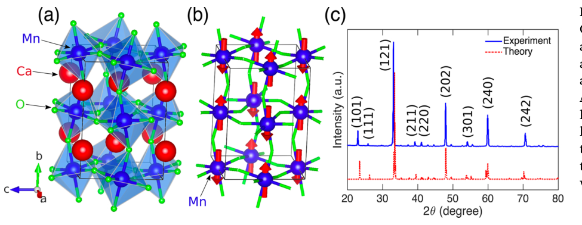
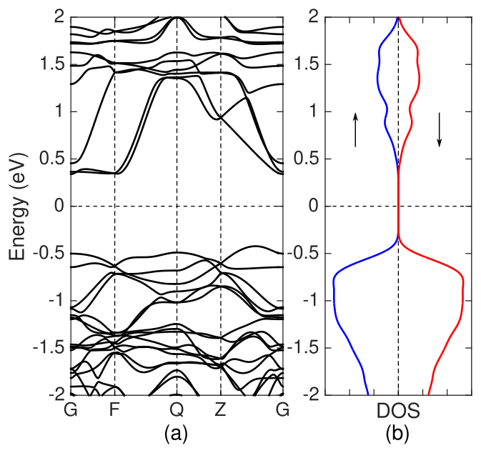
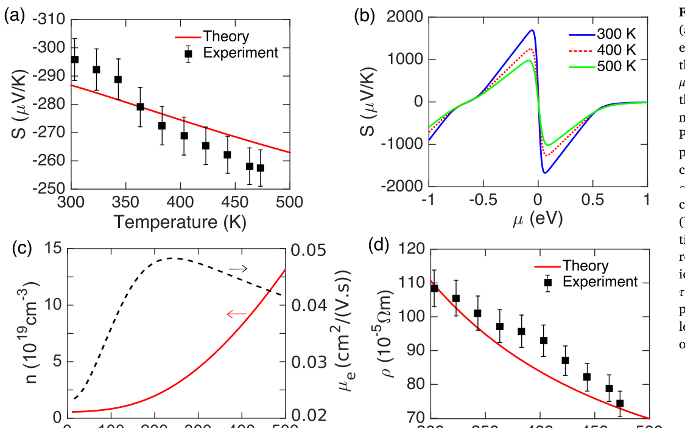
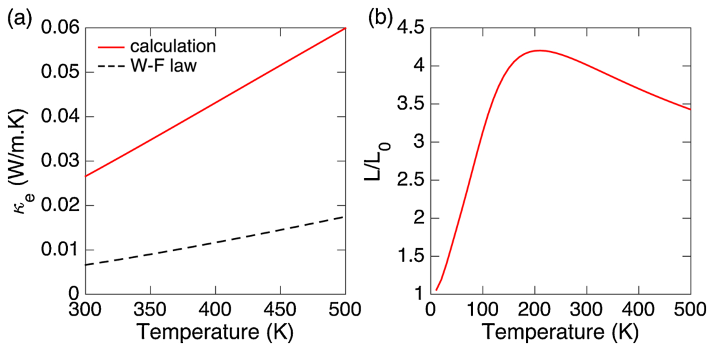
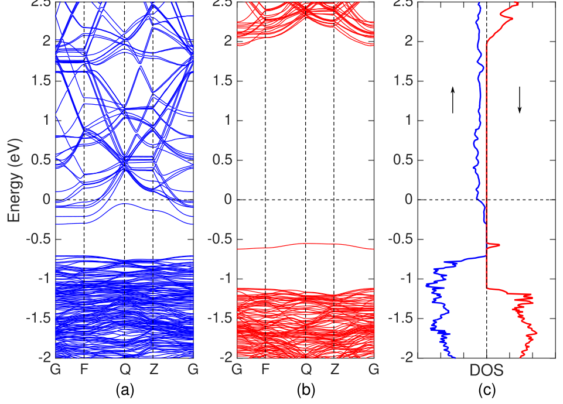
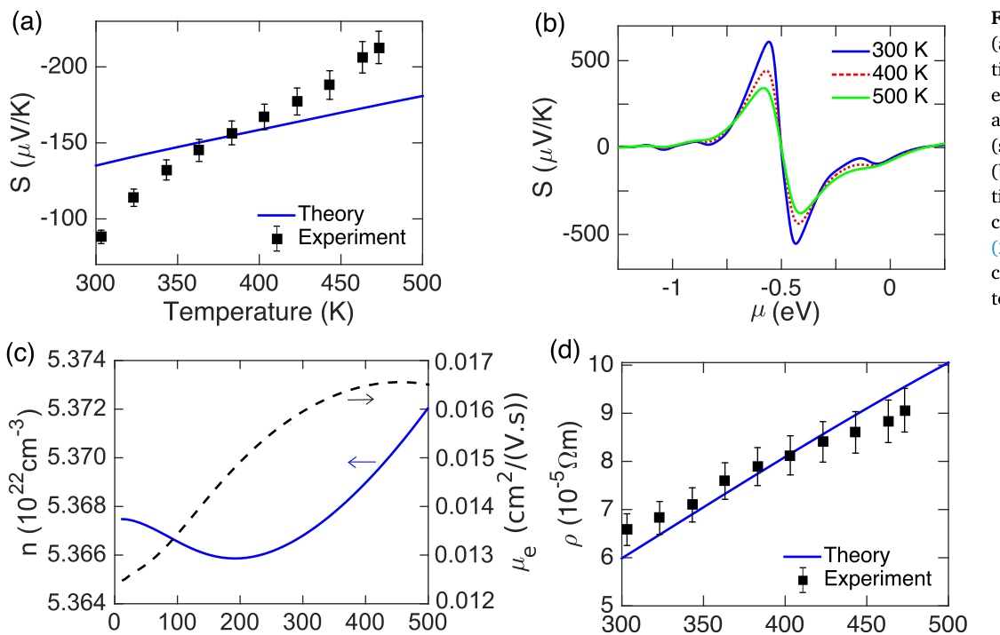
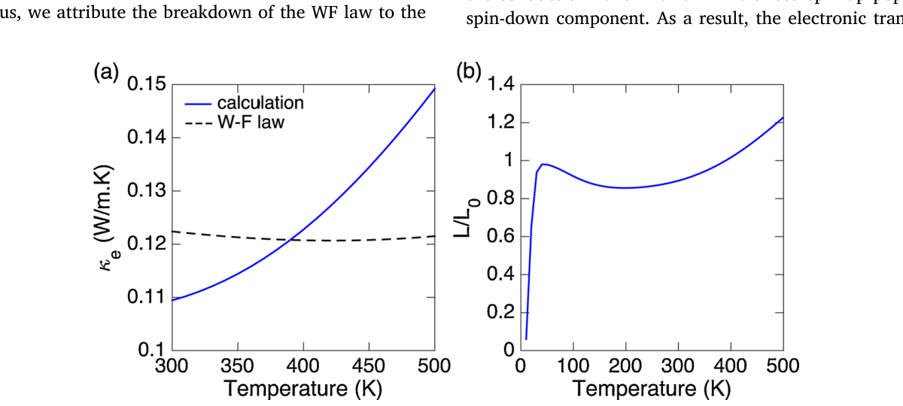
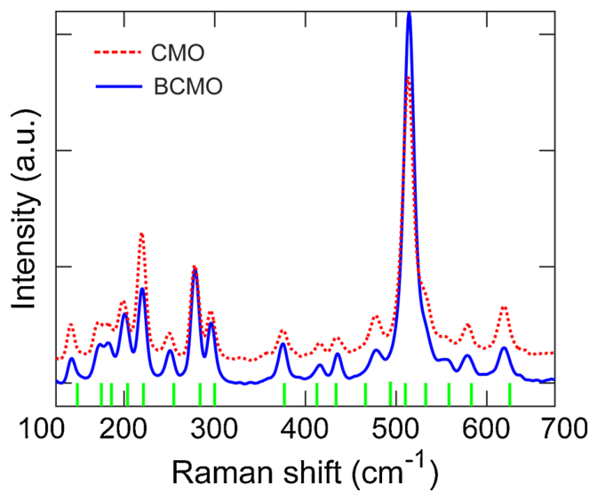

Ringkasan Eksekutif untuk Peneliti (4 Poin Inti)
1. Tantangan Hukum Wiedemann–Franz (WF): Untuk memanen listrik dari panas buangan, material termoelektrik harus memiliki rasio konduktivitas listrik terhadap termal yang tinggi. Pada logam biasa, hukum WF menyatakan panas elektron berbanding lurus dengan konduktivitas listrik. Namun, CaMnO₃ murni justru melanggar hukum ini dengan bilangan Lorenz 4 kali lebih besar dari logam biasa, karena elektron terlokalisasi pada orbital Mn 3d lebih efisien menghantar panas daripada muatan.
2. Efek Doping Bismut (BCMO): Mengganti 3% kation Ca²⁺ dengan Bi³⁺ memicu mekanisme pertukaran ganda (double-exchange) antara ion Mn³⁺ dan Mn⁴⁺ yang dijembatani oksigen. Elektron mengalami delokalisasi, mengubah fasa dari isolator antiferomagnetik menjadi konduktor feromagnetik logam semu (half-metallic).
3. Rekayasa Hamburan Fonon: Atom bismut yang sangat berat menyumbang hamburan fonon anharmonik dan memperlambat kecepatan rambat suara kisi dari 1.38 km/s menjadi 0.81 km/s. Konduktivitas termal kisi (κ_ph) pun anjlok drastis dari ~8.5 W·m⁻¹·K⁻¹ menjadi ~4.5 W·m⁻¹·K⁻¹.
4. Lonjakan Figur Kebaikan (ZT): Penurunan resistivitas listrik sebesar 10 kali lipat mendominasi penurunan koefisien Seebeck (2x), sehingga Power Factor (PF) dan figur kebaikan termoelektrik (ZT) melonjak signifikan. Teori memprediksi kinerja ini dapat digandakan lebih jauh jika tingkat doping diarahkan ke tepi pita konduksi (μ = -0.5 eV).
1. Dilema Termoelektrik: Menyelaraskan Aliran Muatan dan Panas
Pemanenan energi panas terbuang menjadi listrik melalui modul termoelektrik (TE) memegang peranan vital dalam efisiensi energi industri modern. Namun, merancang material termoelektrik berkinerja tinggi merupakan salah satu teka-teki paling rumit dalam fisika zat mampat. Kinerja suatu material termoelektrik diukur melalui figur kebaikan tak berdimensi ZT, yang dirumuskan sebagai:
Di mana S adalah koefisien Seebeck, T adalah suhu mutlak, ρ adalah resistivitas listrik, dan κ adalah konduktivitas termal total (penjumlahan kontribusi elektron κ_e dan kisi fonon κ_ph). Material yang ideal harus bertindak sebagai "phonon glass, electron crystal" (PGEC)—yakni menghantar elektron sebebas kristal logam murni, tetapi meredam konduksi panas fonon seburuk kaca amorf.
Tantangan mendasar timbul dari hukum Wiedemann–Franz (WF) pada logam konvensional: rasio konduktivitas termal elektron (κ_e) terhadap konduktivitas listrik (σ = 1/ρ) berbanding lurus dengan suhu, terikat oleh bilangan Lorenz standar L₀ ≈ 2.44 × 10⁻⁸ W·Ω·K⁻². Ketika kita berusaha menaikkan konduktivitas listrik, laju perambatan panas oleh elektron pun ikut melonjak, menahan peningkatan nilai ZT.
Oksida perovskit CaMnO₃ (CMO) menarik perhatian besar karena sifatnya yang tidak beracun, ramah lingkungan, dan stabil secara struktural bahkan pada suhu melampaui 900 °C. Pada kondisi dasar (ground state), CMO merupakan isolator antiferomagnetik (AFM) akibat korelasi elektron Mott yang kuat. Riset kolaboratif antara peneliti LIPI, Universitas Indonesia, Universitas Brawijaya, dan Sakon Nakhon Rajabhat University Thailand ini menyelidiki bagaimana korelasi elektron tersebut memicu anomali hukum WF, dan bagaimana substitusi kationik bismut (Bi) membuka terobosan baru.
2. Struktur Kristal Ortorombik dan Fasa Dasar CaMnO₃
Sintesis CaMnO₃ murni dilakukan melalui reaksi fasa padat (solid-state reaction) berbahan dasar CaCO₃ dan MnO₂, dilanjutkan dengan teknik hot-pressing pada suhu 1173 K bertekanan 60 MPa dalam atmosfer argon, serta penataan anil pada 1473 K selama 36 jam di udara.

Melalui kalkulasi fungsional kerapatan terpolarisasi-spin (DFT+U dengan potensial Coulomb pada orbital Mn sebesar U = 5 eV), struktur pita elektronik CaMnO₃ berhasil dipetakan secara akurat (Gambar 2).

3. Anomali Bilangan Lorenz: Pelanggaran Hukum Wiedemann–Franz
Pengukuran eksperimental sifat transport pada rentang suhu 300–473 K memperlihatkan bahwa CaMnO₃ murni bertindak sebagai semikonduktor tipe-n (ditandai dengan nilai koefisien Seebeck S yang bernilai negatif). Pada suhu ruang, Seebeck terukur mencapai -300 μV/K, dengan resistivitas listrik ρ yang menurun seiring kenaikan suhu khas model semikonduktor Drude (Gambar 3).

Namun, temuan paling mengejutkan terungkap saat menghitung konduktivitas termal elektron (κ_e) dan bilangan Lorenz (L = κ_e × ρ / T). Pada logam biasa, nilai L konstan pada angka L₀ = (π k_B / e)² / 3.

Anomali ini bersumber dari sifat elektron berkorelasi kuat (strongly correlated electrons) di dalam kisi manganit. Korelasi Coulomb yang intensif memisahkan mekanisme penghantaran panas dan muatan listrik, yang secara inheren merugikan performa termoelektrik CaMnO₃ murni.
4. Doping Bismut: Delokalisasi Elektron & Pemulihan Sifat Logam
Untuk mengatasi hambatan tersebut, peneliti mensubstitusi 3% atom kalsium (Ca²⁺) dengan kation bismut (Bi³⁺), menghasilkan senyawa Bi₀.₀₃Ca₀.₉₇MnO₃ (BCMO). Karena bismut membawa valensi +3, kehadiran kation ini memaksa sebagian ion Mn⁴⁺ di sebelahnya tereduksi menjadi ion Mn³⁺.
Kemunculan pasangan Mn³⁺ (konfigurasi t₂g³ e_g¹) dan Mn⁴⁺ (t₂g³ e_g⁰) memicu terjadinya mekanisme pertukaran ganda (Double-Exchange / DE interaction) yang dijembatani oleh atom oksigen:

Delokalisasi elektron ini mentransformasikan sifat transport secara radikal (Gambar 6). Konsentrasi pembawa muatan (n) melonjak seribu kali lipat, mencapai ~5 × 10²² cm⁻³ (dibandingkan 5 × 10¹⁹ cm⁻³ pada CMO murni). Akibatnya, resistivitas listrik ρ anjlok hingga satu orde besaran (10 kali lebih konduktif).

Selain itu, sifat metalik BCMO berhasil memulihkan keabsahan hukum Wiedemann–Franz (Gambar 7). Rasio bilangan Lorenz (L/L₀) kini berada sangat dekat dengan angka 1, membuktikan bahwa anomali pemisahan transport panas dan muatan telah dihilangkan.

5. Peredaman Fonon Kisi dan Lonjakan Figur Kebaikan ZT
Dalam material oksida perovskit, konduktivitas termal elektron (κ_e) sebenarnya dua orde besaran lebih kecil dibandingkan konduktivitas termal kisi yang dibawa oleh fonon (κ_ph). Artinya, peredaman fonon kisi adalah kunci sesungguhnya untuk menekan nilai κ total.
Atom bismut memiliki massa atomik yang jauh lebih besar (massa molar Bi = 208.98 g/mol vs Ca = 40.08 g/mol). Kehadiran atom berat ini di dalam kisi memicu ketidaksesuaian massa dan memperkuat derajat anharmonisitas kisi (dipertegas oleh parameter Grüneisen γ ≈ 3.47). Menggunakan model Callaway–Debye, kecepatan rambat suara efektif terhitung melambat dari 1.38 km/s pada CMO menjadi hanya 0.81 km/s pada BCMO, diiringi pemendekan masa hidup fonon (phonon lifetime).

Spektroskopi Raman (Gambar 9) memvalidasi peran hamburan fonon tersebut. Munculnya lonjakan intensitas modus vibrasi pada 513 cm⁻¹ pada sampel BCMO dikonfirmasi sebagai tanda hamburan cacat kisi (defect scattering) yang diinduksi oleh substitusi bismut.

| Parameter Fisis | CaMnO₃ (Pristine CMO) | Bi₀.₀₃Ca₀.₉₇MnO₃ (BCMO) | Efek Doping Bismut |
|---|---|---|---|
| Fasa Keadaan Dasar | Isolator Antiferomagnetik (AFM) | Logam Feromagnetik (FM) | Transisi fase melalui interaksi pertukaran ganda (DE) |
| Konsentrasi Pembawa (n) @300K | 5 × 10¹⁹ cm⁻³ | 5 × 10²² cm⁻³ | Meningkat ~1000 kali lipat |
| Resistivitas Listrik (ρ) @300K | ~1.1 × 10⁻³ Ω·m | ~6.5 × 10⁻⁵ Ω·m | Turun drastis lebih dari 10 kali lipat |
| Koefisien Seebeck (S) @300K | -300 μV/K | -150 μV/K | Turun 2 kali (khas gas Fermi metalik) |
| Rasio Bilangan Lorenz (L/L₀) | ~4.0 (Melanggar Hukum WF) | ~1.0 (Memulihkan Hukum WF) | Menghilangkan disparitas transport muatan dan panas |
| Kecepatan Suara Fonon (ν) | 1.38 km/s | 0.81 km/s | Melambat 41% akibat massa berat Bi |
| Konduktivitas Termal (κ) @300K | ~8.5 W·m⁻¹·K⁻¹ | ~4.5 W·m⁻¹·K⁻¹ | Tereduksi hampir separuh (hambatan fonon meningkat) |
6. Kesimpulan dan Peta Jalan Optimasi Lanjutan
Studi komprehensif ini membuktikan bahwa strategi substitusi kationik dengan atom berat berkemampuan donor elektron seperti bismut berhasil memecahkan kebuntuan paradoks termoelektrik pada oksida perovskit:
- Di Sektor Elektronik: Doping Bi menginduksi interaksi pertukaran ganda Mn³⁺–O–Mn⁴⁺, mengubah material menjadi konduktor metalik yang menurunkan resistivitas listrik sebesar 10 kali lipat serta memulihkan korespondensi hukum Wiedemann–Franz.
- Di Sektor Fononik: Ketidaksesuaian massa atomik bismut memicu hamburan kisi anharmonik, memangkas kecepatan suara dan memperpendek masa hidup fonon, sehingga konduktivitas termal kisi anjlok secara substansial.
Kombinasi kedua efek ini menghasilkan peningkatan terukur pada faktor daya (PF) dan figur kebaikan termoelektrik ZT. Hasil simulasi teoritis Boltzmann transport menunjukkan bahwa potensi sesungguhnya dari material ini masih menyimpan ruang peningkatan hingga dua kali lipat bila konsentrasi dopan dapat disetel secara presisi di rentang 2.8–3.2% agar tingkat Fermi tepat berada pada celah pita konduksi (μ = -0.5 eV).
Suprayoga, E., Putri, W. B., Singsoog, K., Paengson, S., Hanna, M. Y., Nugraha, A. R., Munazat, D. R., Kurniawan, B., Nurhuda, M., Seetawan, T., & Hasdeo, E. H. (2021). Investigation of electron and phonon transport in Bi-doped CaMnO₃ for thermoelectric applications. Materials Research Bulletin, 141, 111359. https://doi.org/10.1016/j.materresbull.2021.111359